Префектура Канагава · Хаяма · где остановиться
Kachi Tei в Хаяме: вилла ученика Фрэнка Ллойда Райта, которую сдают целиком
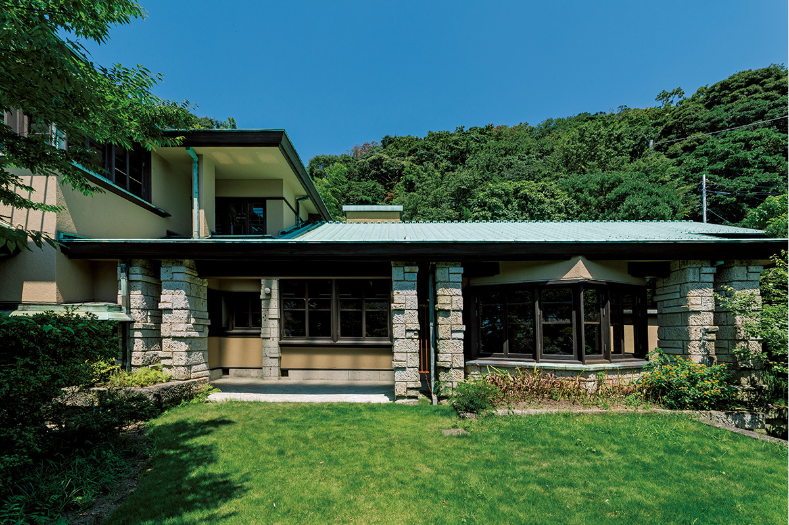
Хаяма на берегу залива Сагами давно была курортом, где строили виллы императорская семья, политики и люди искусства. Одна из этих вилл, построенная в 1928 году учеником Фрэнка Ллойда Райта, после реставрации принимает гостей.
Место
Вилла на склоне холма
Хаяма лежит между морем и горами, климат здесь мягкий, а зелени много. С давних пор городок был дачным местом: тут стоит императорская вилла Хаяма, а рядом с ней строили дома политики, предприниматели и люди искусства. Kachi Tei, дом семьи Кати, хранит память о той эпохе.
Вилла стоит в зелёной зоне Сангаока, примерно в десяти минутах пешком вглубь от пляжа Иссики и императорской виллы. Её построили в 1928 году для управляющего лондонским отделением торговой компании Mitsui, который позже был в ней директором и ревизором. Проект сделал Арата Эндо, любимый ученик Фрэнка Ллойда Райта.
В доме хорошо видны приёмы Райта. Колонны сложены из неровных блоков туфа оя, того же камня, которым обильно отделан старый главный корпус отеля «Империал», построенный в те же годы. Сам дом нарочно сделан низким, чтобы раствориться в окружающей зелени: это «стиль прерий», архитектурная философия Райта. Через три года после виллы Эндо построил хозяину и главный дом в Токио, так что заказчик, видимо, доверял ему полностью.
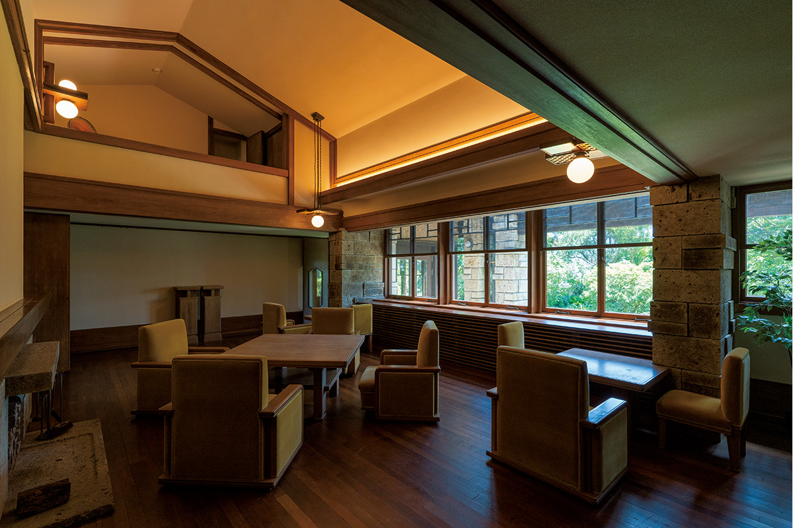
История
Не музей, а дом для жизни
Все эти годы в доме жили, и он сильно обветшал. Нынешняя владелица возглавила проект, чтобы отремонтировать виллу, не потеряв её ценности.
«Хороших построек того времени, особенно частных домов, в Японии почти не осталось. Родные первых хозяев рассказывают, что супруги долго жили за границей, хорошо разбирались в архитектуре, давали Эндо подробные указания и строили дом вместе с ним. Камень оя на холм помогали носить соседи. В Хаяме этот дом знают и любят, и я хотела его сохранить, но не как памятник, на который только смотрят»
владелица дома
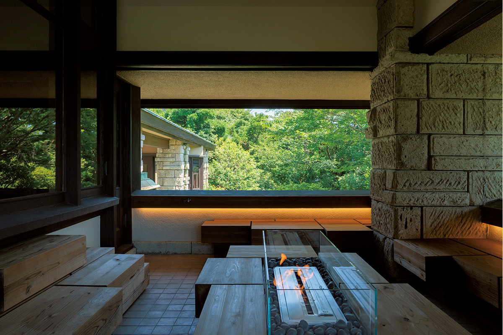
«Смотреть, как меняется вид на Хаяму, представлять, как жили в каждой комнате: чтобы это почувствовать, нужно провести здесь несколько дней. Поэтому лучше всего было сделать дом местом для ночлега. Мы устроили и винный погреб, так что можно привезти любимое вино и отдыхать как хочется»
владелица дома
От центра Токио до Хаямы около полутора часов. В 2020 году, во время пандемии, отдых недалеко от дома и короткие поездки стали особенно популярны, а дом, который сдают целиком, позволяет провести время только с семьёй или близкими друзьями. Общая площадь дома 364 квадратных метра, и здесь можно договориться о вечеринке или другом мероприятии.
«Ремонт ради сохранения, наша первая цель, закончен. Дальше хочется, чтобы домом пользовались люди, которые понимают его ценность. Здание старое, но мы хотим найти для него новое применение и показать на его примере, как можно пользоваться объектом культурного наследия»
владелица дома
Реставрация
Что изменилось и что осталось
Дому больше девяноста лет. Он деревянный, местами с железобетоном, в два этажа и частично с цокольным этажом. Фасады отремонтировали полностью, а сад привели в порядок, чтобы вернуть дому вид в «стиле прерий». Медная крыша осталась со времени постройки и со временем покрылась красивой изумрудной патиной.
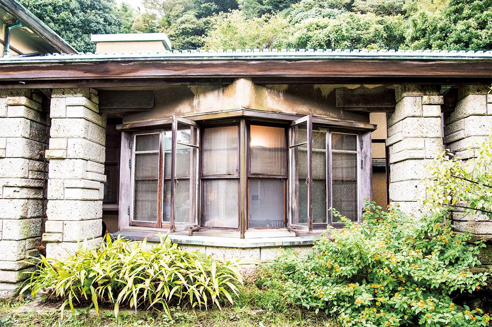
За большими окнами столовой видно море. Раньше за стеклянными дверями была застеклённая веранда вроде зимнего сада. При реставрации с неё сняли сетки и сделали террасу, так что столовая вместе с террасой вмещает за одним столом большую компанию.
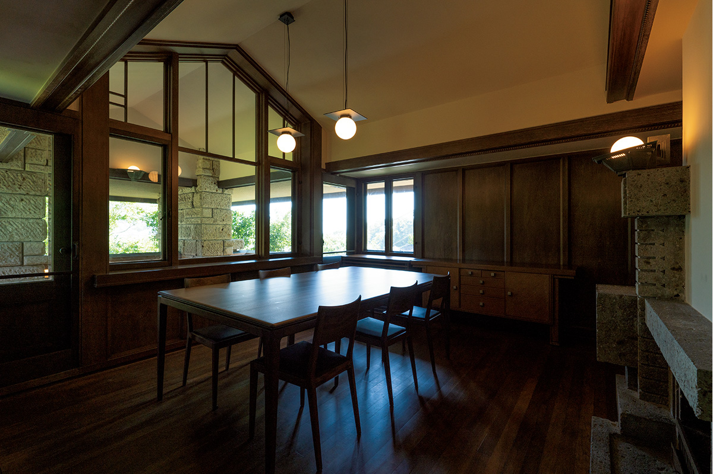
Игровая комната с самого начала служила бильярдной. С расчётом на курильщиков в ней сделали высокий потолок, чтобы воздух уходил вверх. Комнату оставили близкой к оригиналу и расставили по ней столы и табуреты, которые подходят к интерьеру.
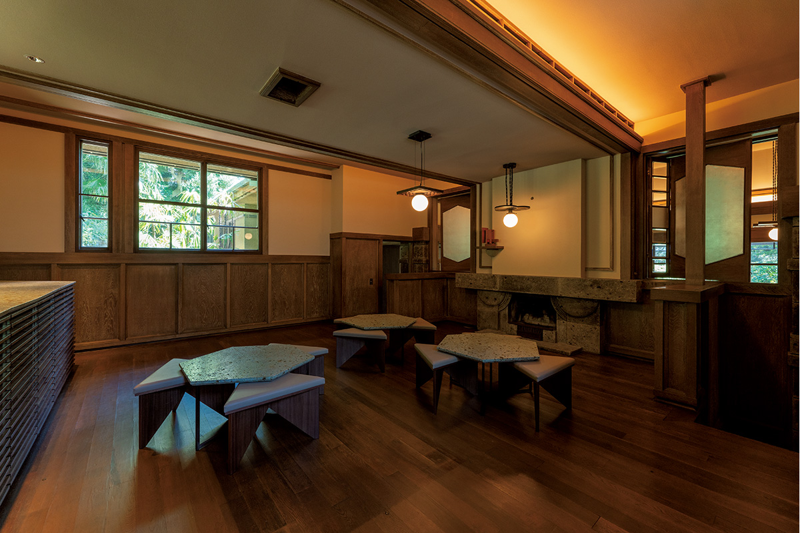
Эндо проектировал не только здание, но и мебель, и светильники. Обычно лампу вешают в центре комнаты, а у него место для неё выбрано с учётом мебели, падающего света и того, как комната выглядит целиком.
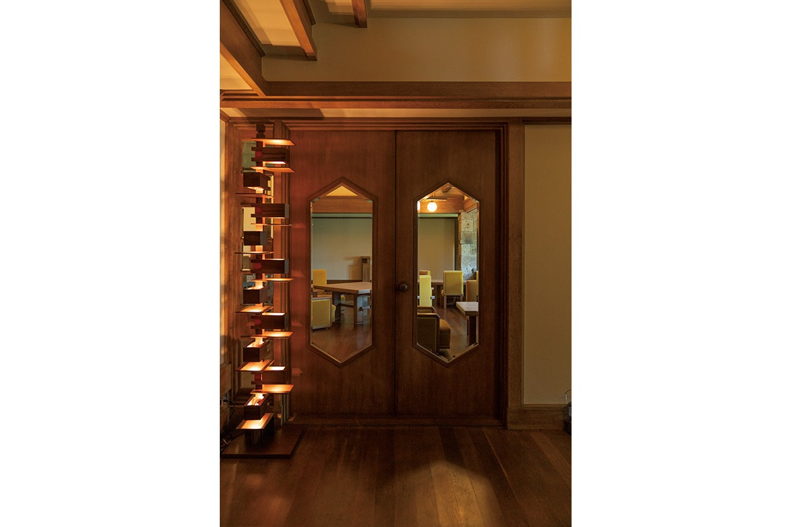
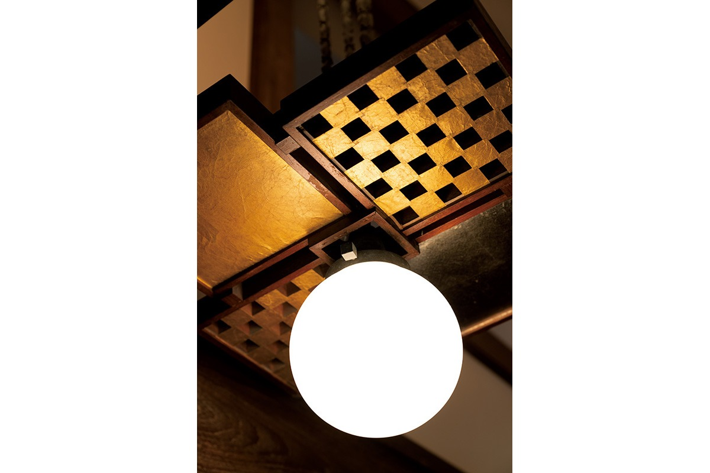
Архитектор
Взгляд реставратора
Проект сохранения и ремонта виллы сделал архитектор, глава бюро Kamiya Architects. Он окончил архитектурный факультет университета Васэда и учился у Кэнго Кумы. В 2016 году по государственной программе для молодых деятелей культуры уехал в Данию, работал в бюро BIG (Bjarke Ingels Group) старшим архитектором на проектах больших высотных зданий, а в 2017 году открыл собственное бюро.
«Фрэнк Ллойд Райт один из самых любимых архитекторов моего учителя Кумы. Сохранить и отремонтировать работу Эндо, который шёл за Райтом, это редкий опыт»
архитектор реставрации
По совпадению, когда он взялся за Kachi Tei, ему было примерно столько же лет, сколько Эндо, когда тот строил эту виллу.
Дом стоит на склоне, поэтому комнаты соединены уступами, как рисовые террасы. Так проявляется «стиль прерий»: здание вписывают в окружающую природу. Геометрические мотивы в доме и интерьере идут от принципа Эндо, который он называл «дзэнъицу», «всё едино».
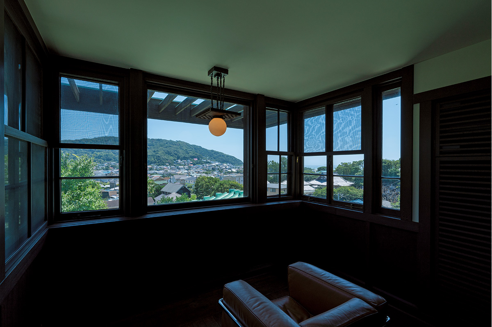
«Шестиугольник есть в природе: это снежинка, пчелиные соты. И в „стиле прерий“, и в „дзэнъицу“ есть мысль слиться с природой, впустить её в дом, и здесь видно, как это было важно для Эндо. Мы решили не повторять его приёмы буквально, а прочитать их заново»
архитектор реставрации
Владелица хотела, чтобы здесь могли подолгу жить гости со всего мира. Поэтому архитектор искал, что можно добавить, не выходя за рамки охраны культурного наследия. Главных изменений два: бывшую комнату прислуги в цокольном этаже превратили в спа, а у столовой появилась терраса, где собираются гости.
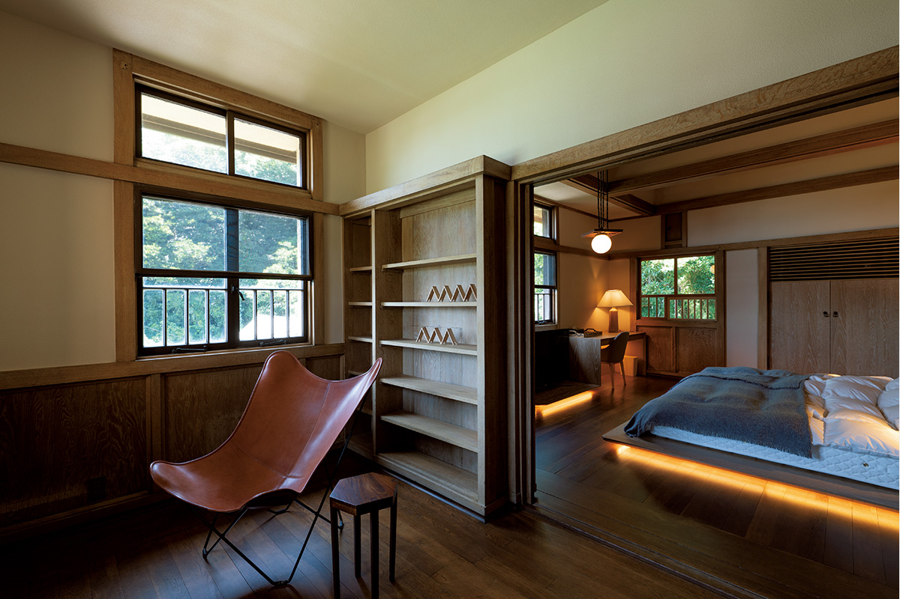
«Здание живёт, только когда им пользуются. Ночь в доме знаменитого архитектора дорогого стоит, приезжайте и попробуйте»
архитектор реставрации
Практика
Еда и как остановиться
Дом сдают без питания, но поблизости много ресторанов. Еду можно заказать с доставкой из «Хикагэ тяя», японского ресторана, которому около трёхсот лет, а на завтрак взять выпечку в популярной местной пекарне. Дом снимали в сериале «Кисибэ Рохан не двигается», так что поклонникам его стоит увидеть своими глазами.
В 2020 году за две ночи с гостей брали от 429 000 иен, за три ночи от 476 190 иен с налогом. Дом рассчитан на шесть человек.
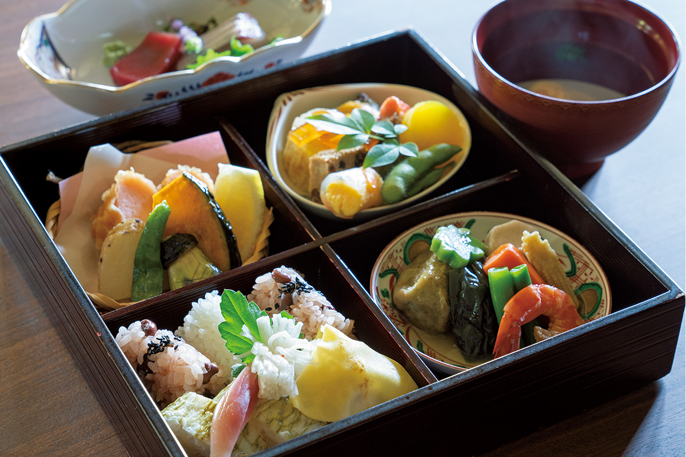
Kachi Tei
- Адрес
- префектура Канагава, уезд Миура, Хаяма, Иссики, 1706
- Телефон
- +81 44-211-1711 (отдел unico)
- Номера
- дом целиком на 6 человек: 3 спальни, ванная, душевая, 3 туалета, кухня, столовая, терраса, Wi-Fi
- Цены / Вход
- 2 ночи от 429 000 иен, 3 ночи от 476 190 иен с налогом, без питания (2020 год, цена зависит от сезона, уточнять)
- Заезд / выезд
- заезд 15:00–18:00, выезд до 12:00
- Как добраться
- около 16 минут на машине от станции Дзуси (JR)
- Сайт
- kachitei.link
Фото: Ацуси Ямахира.